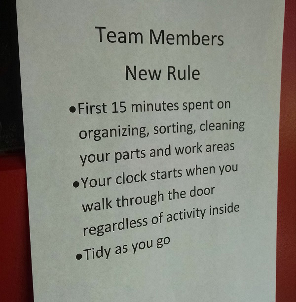
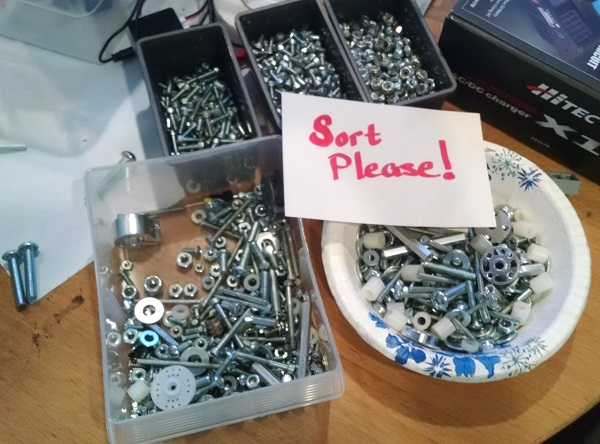

We have never had a great track record of having an organized workspace, so each member was greeted with the new rule as we entered.  Hopefully this will save us a lot of time in the future because everyone will contribute a little to the effort.
Once we figured out what we were going to organize the effort went faster than expected. A bowl of assorted pieces was out on the table, and it was half empty in less than 20 minutes.  The hex keys are lined up on the work table magnet and hopefully they'll be put back in place as soon as someone is done. We probably started with 3 or 4 wrenches last year, and we only have one at this point. The USB cord drawer has been organized with gallon sized bags for each type, micro, mini, and standard, where it was originally a rat's nest of tangled wires. The giant metal file is still lost, but hopefully it will show up as we clean through the meets.